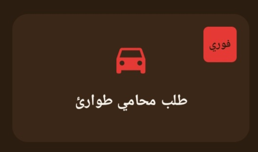
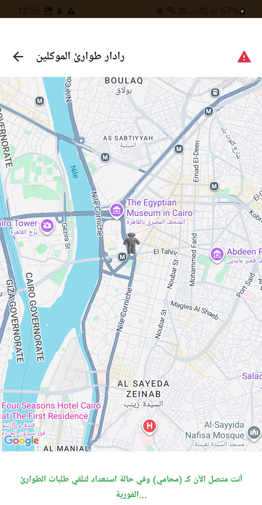
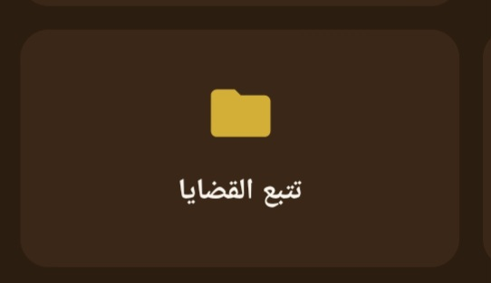

مقدمه : الساده مستخدمي تطبيق Smart Legal Advisor في بداية يسعدني ان اهنئكم انه بشرف عضويتكم وتحميلكم واستخدامكم للتطبيق فقد اثبت وجوده ونجح نجاح باهر في فترة زمنيه قصيره، وتحديدا في خدمة طلب محامي طوارئ وتقديم الخدمات والاجراءات القانونيه السريعه في كل مكان وموقع يحتاج فيه المستخدم لإجراء قانوني سريع ومحدد القيمه. وهنا شرح تفص تفصيلي للخدمه لأنضمام مذيد من المستخدمين وطلبها بطريقه صحيحه حتي لايتم إلغاؤها . 🌟🏛️
اول خطوه بعد التسجيل للمستخدمين ان يشحن المستخدم محفظته التي بالتطبيق وذلك لعدم الاخلال بوقت وجهد واتعاب المحامي المطلوب منه التوجه لك لإنهاء اجراء قانوني سريع او لمذيد من التأمين وبناء الثقه بالتطبيق لايقوم المستخدم بشحن المحفظه وإنما يدفع المستخدم مباشرتأ نقدي للمحامي يدا بيد وقبل البدء في الإجراء مع تحمل المستخدم عمولة الدفع النقدي المحدده بالتطبيق . 🤝💵
يضفط المستخدم علي زر طلب محامي طوارئ الموجود داخل التطبيق والذي علامته سيارة بالاحمر لتظهر له خريطه بها موقعه وموقع الساده المحامين مستخدمي التطبيق الأقرب اليه واسفل الخريطه يظهر له ايضا اسماء الساده المحامين وتقييم كل واحد منهم والمسافه والوقت المستغرق للوصول اليه ، وهنا يجب علي الساده المحامين تفعيل زر التواجد الموجود داخل التطبيق وبعد ذلك الضغط علي زر طلب محامي طوارئ لفتح له الخريطة الموضح فيها موقع المستخدمين للتطبيق الذين بموقعه مع الاستمرار بفتح هذه النافذه كما موضح بالصورة لظهور له طلبات المستخدمين علي هذه النافذه 🗺️📲


عند قبول الاستاذ المحامي للمهمه يتم التسعير لأتعاب للمهمة من الإدارة واذا تأخر التسعير وتحديد اتعاب المهمة (لطلبات عديده في نفس الوقت) يرجي الضغط من المستخدم علي زر تتبع القضايا واضافة المهمة عليها وسيتم الرد فورا من التطبيق عن طريق رساله توجه المستخدم بطريقة التصرف السريع . ⚡📩

يضغط الاستاذ المحامي علي زر البدء في المهمه وسيفتح له نافذة تواصل كتابيه بينه وبين المستخدم الطالب للإجراء وبعد إنهاء المهمه يقيم كل من الطرفين ( المستخدم، والاستاذ المحامي ) بعضهما لكي يكون تقييمها ظاهر لكافة الساده المحامين والمستخدمين علي التطبيق. 🌟🤝
مع خالص تمنياتي بالتوفيق والتعاون للنجاح الدائم ✨